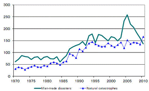
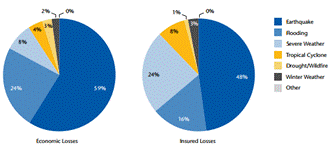

Paper Title :
The Government of Catastrophic Risks
Abstract
The issue in question turns out to be very current in relation to the continuous increase of natural disasters and the consequent damage attributable to them, the analysis of this subject can not be separated, however, by their awareness of the increasing use of public resources necessary to cope with the huge Costs essential to the implementation of actions aimed at the reconstruction of the affected areas. The analysis the conduct in this paper refers to a study of the different types of natural disasters, issues related to these and the identification of opportunities offered by the insurance system by identifying the possible profiles of the different types of coverage just natural disasters. In sub-order, in the course of the work it was desired to single out the most common forms and the main methodological approaches to insurance risk arising from its catastrophic phenomena.
Authors:
Coviello Antonio, Di Trapani Giovanni
Paper Transcript of Paper Titled :
The Government of Catastrophic Risks
The Government of Catastrophic Risks
Coviello Antonio
IRAT - CNR Institute for Service Industry Research – Italian National Research Council
Professor of Marketing in the Faculty of Economics of the Second University of Naples
Napoli, Italia
Di Trapani Giovanni
IRAT - CNR Institute for Service Industry Research – Italian National Research Council
Professor of Economical Statistic at University "Pegaso"
Napoli, Italia
Abstract —The issue in question turns out to be very current in relation to the continuous increase of natural disasters and the consequent damage attributable to them, the analysis of this subject can not be separated, however, by their awareness of the increasing use of public resources necessary to cope with the huge Costs essential to the implementation of actions aimed at the reconstruction of the affected areas. The analysis the conduct in this paper refers to a study of the different types of natural disasters, issues related to these and the identification of opportunities offered by the insurance system by identifying the possible profiles of the different types of coverage just natural disasters. In sub-order, in the course of the work it was desired to single out the most common forms and the main methodological approaches to insurance risk arising from its catastrophic phenomena.
Keywords-component; Insurance, catastrophic risks, no man made events
Type and taxonomy of catastrophic risks: the vision of insurance companies
In recent years, the frequency and severity of events related to catastrophic events have increased considerably (Angilletta, 2009, Schwarz, 2008, 2009, 2010) and therefore are also heightened the problems related not only to the aspects of human security but merely including those related to more general economic resources necessary to cover the legal costs and Reconstruction (Bode, 1999). In Italy, for example, note that in the second half of the 90s, there were well over 300 floods, with an average frequency of at least three per year and with an intensity that can cause damage more than relevant. At the higher frequency and intensity of catastrophic events recorded here and just highlighted is added thus to an increase in insured losses and a marked increase in insurance density as well as the actual value of the insured property. The result of the presented effect due on increased cost that insurance companies are called to bear to address precisely these natural phenomena characterized by high uncertainty and apparently unrelated to the will and action of man.
- Figure 1 Number of catastrophic events 1970-2009

Source: Sigma (2011).
These effects involve, among other things, a substantial modification of the main approaches to governance by governments (national and local) and consequently to a change in the guidelines also due to the problems associated with climate change and the effects that it can either raise the frequency and intensity of natural disasters.
The analysis of the graph produced and expressed in Figure 1, shows how the natural disasters of human origin - in literature defined man-made - are numerically higher than those in natural other evidence deduced from exposure graphics is the peak of events recorded in the recent years.
- Figure 2 Economic Losses and Insurance Losses - Breakdown by type of event year 2011
(Figures in Percentage)

Source: our processing of data from Aon Benfield
Recent research conducted was clearly increased in recent decades, the costs and therefore the economic value of the damage caused by natural disasters; phenomenology that this can only be due to the increased concentration of the population also living in the city, which become increasingly large and that have developed in areas too often an area exposed to strong catastrophe risks.
Before going fully in the topic covered by the chapter and related to macroeconomic implications subsequent to the occurrence of catastrophic events, it is appropriate to make a brief discussion of its major catastrophic events. In particular, we will refer to those natural phenomena on which human action has no impact and which is not found no possible preventive intervention to mitigate the entity or to control their spread.
The various natural disasters in the literature (Migliorini, 1981; Alexander, 1990) are generally distinguished and classified according to the following classification:
·Events due to natural causes;
·Technological risks;
·Epidemics or pandemics;
·Terrorism.
Within this classification, we will mainly examined the risks related to catastrophic events caused by natural phenomena characterized by events. These phenomena may, in turn, be divided into six different types that occur and by intervention of the single Nature and wherein, as said, the work of man has no direct impact. Natural events or as a taxonomy overseas used to call "No Man Made Events" can be classified into:
·Earthquake;
·Tsunami / Tsunami;
·Volcanic Eruptions;
·Floods;
·Floods;
·Storms
·Weathering:
·Hurricanes;
·Storms;
·Tornadoes.
The management of catastrophic risks
The management of catastrophic risks through the capital market with derivatives or insurance-linked securities in Italy is a new frontier for the insurer to cover the risk arising from the portfolios of insured policies and in its various forms can be if there is a stability of a financial market alternative method for the management of catastrophic risks.
The current liquidity conditions in the financial markets and in particular on the Italian an obstacle difficult to overcome in the present historical stage for the success of operations issue of securities linked to risk of the occurrence of natural catastrophe. Also a problem for the spread of this type of security is the lack of perception and professionalism of the Italian financial market with respect to these particular insurance risks. This affects the efficient pricing for these activities, also due to the lack of knowledge of actuarial methods of risk assessment.
However, securities indexed to the risk of catastrophe contain a type of insurance risk, which by its nature is different from the financial and, therefore, it is poorly correlated to the typical risks in the capital market. Therefore, these securities may be included in the portfolios of investment, to improve the quality and diversification, opening up spaces for the success of the issue of bonds linked to insurance risk in question, even in a financial market like the Italian one.
The models for disasters under Solvency II
A specific model is implemented by companies to the risk of pricing or subscription, which arises from the possibility that the premiums received are not sufficient to cover future claims, especially if you are experiencing catastrophic events. The insurer generally estimate the frequency of exposure to claims, large claims and natural disasters (earthquakes, floods, storms, etc.. Using simulation models, stochastic or deterministic, the results are validated by sensitivity analyzes and stress tests. addition, the company determines the possible loss scenarios and risk capital required to cover them, also taking into account the type of reinsurance structure available, the net retention of premiums / risks assumed and coverage. To define the level of reinsurance the undertaking shall models that consider the creation of value estimated from risk capital measure to evaluate the efficiency and adequacy of the solutions to choose from. Specific risk analysis allow the company to define for each type of business structure reinsurance, the level of retention and the reinsurance capacity needed to mitigate exposure to individual risk / event, which is derived from insurance contracts in the portfolio.
These models are the basis on which the activity of the large insurance groups operating in the European market. The characteristic of this market is to provide a raised concentration in a few large transnational groups with vested interests in Europe but extended to the American market, Japanese, Chinese, etc. .. Of these groups to the prudential supervision is exercised by the cooperation of the authorities of the countries where the Group operates and under the coordination of the Authority which oversees the parent company.
The European Supervisory Authorities and the market are talking about what are the guidelines in the implementation of Solvency II for the component modelling of natural disasters, as part of their internal model of risk management, with the aim to form a proper "good practice" in the insurance industry. The increasing use of models for disasters will occur in companies with an internal model, which is favorable in the calculation of capital requirements. Obviously, each insurance company is different and has different needs to be considered, therefore what may be appropriate for a not so to another state and the documentation of Solvency II has not yet been implemented, lacking the common reference point regulatory. The requirements of Solvency II on the subject are complex, as well as the interpretation of this or that general principle, which require appropriate clarifications. Solvency II then is the moment of reflection in which the reflection is encouraged to "good practices". The Supervisory Authority has the responsibility to validate and authorize the use of models for the management of catastrophe risks by coordinating the Supervisor of residence of the parent company and the active cooperation of other authorities who may be considering for local exceptions, the model is efficient and effective. Businesses from their hand to the Supervisory Authority must demonstrate compliance of their internal model on disasters with the most stringent requirements of Solvency II. The internal processes will be assessed for their suitability to manage catastrophic risks, their proper implementation, their effective use in the strategic choices of the company and their proper documentation. Using the risk-based approach of Solvency II is conceivable that appropriate processes are adopted, the most efficient possible, to manage catastrophic risks, including for the purpose of compliance with the solvency requirements arising from the modelling of catastrophic risks.
For companies that do not use their own internal model of risk management, it should be borne in mind that the models for disasters are required by insurance companies to estimate losses from extreme natural catastrophes, as they (although large) is not have historical data to model these risks adequately. In fact, for the simulation of extreme losses sellers of templates for significant disasters employ scientific knowledge and build models to recreate the underlying physical processes. It is then a limit on how a company can treat its low frequency and high severity events without replicating the scientific knowledge required to build the original model and if it is suitable for their needs. The assumptions and methods used and should always be well understood by the company in their effects and this adequately documented.
With the validation of the models under Solvency II will harden, then a "good practice" and will be effective robust instruments of prudential supervision, and for the insurance of risks related to catastrophic events are certainly desirable.
Future developments
Events related to natural disasters are rare, and a time series of data often does not contain all of the dangers and therefore often considerable risk estimation is underestimated. For example, if a certain area is prone to many hurricanes and tsunamis, it could happen that almost nothing has happened in a long series (100 years), with one notable exception. Well before that event if it had been built a model for the hurricane on a historical basis would have made a mistake: the model would not consider events that could have an impact on the frequency and severity of losses. Recent events have shown that after a volcanic eruption has resulted in a direct destruction and the issue of ash that can paralyze air traffic, a tsunami may lead to nuclear disaster that occurred in Japan in 2011, the business model storms during the months winter but there is also the risk of summer storms. Therefore, the length of historical data may not be sufficient to capture the impact of an event related to a natural catastrophe and the insurer may not have made the necessary adjustments of models purchased from outside of the insurance or do not have the appropriate guidelines to make confident on the sound, prudent business.
In order then to standards of business conduct would be necessary to establish the requirements for the conduct of the business of insurance to ensure that customers are treated fairly, both before and after a contract is signed to the point where all the obligations arising from a contract have been met.
The new requirements under Solvency II and the international principles for the conduct of insurance will help to:
- strengthen consumer confidence in the insurance industry;
- minimize the risk that insurers follow business models that are not sustainable or could pose reputational risk, contributing to their financial stability;
- support for a sound and prudent management in the insurance sector through the creation of a level playing field with regard to the basis on which companies can compete and maintain acceptable marketing practices with regard to the fair treatment of customers.
From the above it appears that it is necessary to explore the theme of which is the "good practice" to deal with the damage caused by natural disasters, such as modelling of disasters is compatible with prudential solvency requirements of businesses. Not necessarily the "current practices" insurance companies or those available on the market are the "good practices" for the industry and stakeholders, including policyholders and the state.
The launch of new scientific research focused on specific Italian situation, the more experience from past events, the strengthening of risk management systems and the planning of public interventions for prevention, fuelling a debate on issues involving coverage of risks related to natural disasters, especially those due to climate change, are at this stage the condition needed to better understand how to manage these risks. The entry into force of Solvency II will then make confident on the ability of insurers to manage catastrophic risks efficiently and responsibilities of the supervisory authorities to validate their internal models so that they take into account local specificities. The overall objective is to protect all the interests at stake, inspired by the value that the Italian harm to human solidarity, and support a new Italian idea of sustainable development.
References
- Angilletta A., I rischi catastrofali: il punto della situazione – Ordine Nazionale degli attuari Gruppo SAI. 2009;
- Coviello A. (1999), "Imprese ed assicurazioni: il risk manager" - Dossier, n.128, luglio, Roma;
- Coviello A. (2000): “PMI ed Assicurazioni: il Risk Management”, Gruppo Piccola Industria-Unione degli Industriali della Provincia di Napoli;
- Coviello A. (2004):”Risk management”, PMI-Confapi Caserta, Collana Centro Studi AssicuraEconomia.it;
- Coviello A. (2005), “Il governo dei rischi d’impresa. Il risk management tra prevenzione e trasferimento assicurativo”, Giappichelli, Torino;
- Coviello (2009), "Assicurazione contro i terremoti", Almanacco della Scienza n.0, CNR, gennaio;
- Coviello A. (2012), "Assicurazione unica soluzione", Almanacco della Scienza n.10, CNR, giugno;
- Galbraith J.W., Zernov S., Zinde-Walsh V. – Cat Nat, 2001;
- Munich RE - Geo Risks Research, NatCatSERVICE 2000;
- Munich RE, “La problematica degli eventi catastrofali in Italia,” 2000;
- Munich RE, “Ggli aspetti tecnici e scientifici del rischio alluvione,” pp. 1-34, 2001;
- Munich RE, “I danni da calamità naturali” 2003;
- Righi S., “Assicurazioni, rischi ambientali e cambiamenti climatici,” Ambiente & Sviluppo, no. 6, pp. 561-564, 2008;
- Schwarz Susanna, “Calamità naturali e catastrofi man-made nel 2004: oltre 300 000 vittime e sinistri assicurati senza precedenti,” SIGMA Swiss Re, vol. 1, 2005;
- Schwarz Susanna, “Calamità naturali e catastrofi man-made nel 2005: numerose le vittime dei terremoti, danni da tempeste a livelli record,” SIGMA Swiss Re, vol. 2, Nov. 2006;
- Schwarz Susanna, “Calamità naturali e catastrofi man-made nel 2008: pesanti danni in Nordamerica e Asia,” SIGMA Swiss Re, vol. 2, 2009;
- Schwarz Susanna, “Calamità naturali e catastrofi man-made nel 2007: danni elevati in Europa,” SIGMA Swiss Re, vol. 1, 2008;
- Sigma, “Natural catastrophes and man-made disasters in 2010”, Zurigo, Gennaio 2011;
- Sigma, “State Involvement in Insurance Markets”, Zurigo, Marzo 2011;
- Sigma, “Lessons from recent major earthquake”, Zurigo, Gennaio 2012;
- Swiss RE (2011) - Sigma - Economic Research & Consulting.- Zurigo;
- World Bank, “Sovereign Natural Disaster Insurance for Developing Countries”, September 2007.
- AUTHORS PROFILE
- Coviello Antonio, born in 1966, graduated in Economics and Commerce from the University of Naples "Federico II", is a researcher at the Institute for Research on Tertiary (IRAT) CNR of Naples. It deals with a particular interest in the area of technological innovation, risk management and management / marketing service companies, mainly insurance. E 'was an adjunct professor of insurance, already thirty years old, the University of Salerno (six AA), at the Stoa (where he coordinated the "Master in Insurance Management", funded by the ESF / Ministry of Education and sponsored by ANIA) and for over 10 years (to date) is Professor of Economics and Management of insurance companies in the Faculty of Economics of the University of Naples. He has published numerous papers on insurance, including monographs adopted in several Italian Universities
- Giovanni Di Trapani, from June 2010, has been working as a Researcher in the field of economics and management of insurance enterprises. With regard to the increasingly relevant issue of the damages caused by natural calamities, he studies and analyzes the role and behaviour of risk management when applying specific insurance covers, particularly to address catastrophic risks. He has recently carried out studies aimed at finding a solution to the evolution of the distribution channels ICT, including theintroduction of new market-driven or technology-driven services. Up to May 2010, Giovanni studied Tourism and Cultural Heritage Management, particularly looking at management, consumption and development of the cultural heritage. Giovanni Di Trapani has also specialized in the study of those actions aimed at developing the existent cultural heritage, in its tangible and intangible forms i.e. the study of new, integrated and sustainable supplies available in specific geographical areas. With regard to production and creative consumption, he has studied and analyzed the network, districts and the cultural clusters of some Italian and foreign territories, and defined policies aimed at rejuvenating the city and the urban waterfront.
See "Insurance, environmental hazards and climate change" S. Righi, Environment and Development 6/2008.
The "Density insurance" is an index that is measured by the product of the volume of premiums and the number of inhabitants of a given territory, is used in practice to determine the value of premiums per capita.
"Natural disasters and man-made disasters: high losses in Europe" Schwarz Susanna - SIGMA Swiss Re
JW Galbraith, Zernov S, V Zinde-Walsh – Cat Nat, 2001.
For a useful guide to managing catastrophe models on an internal model under Solvency II, see Association of British Insurers - Industry Good Practice for Catastrophe Modelling - December 2011.